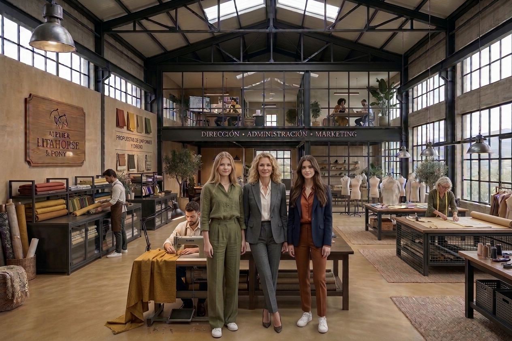

Donostia
Taller central y punto de venta.
Litahorse & Ponylu nace de un sueño: convertir el amor por la costura en un atelier propio. Nuestro nombre guarda el recuerdo de los apelativos cariñosos con los que una madre llamaba a sus pequeñas, apasionadas por los caballos, y la ilusión de crear algo hecho con sus propias manos.
Hoy somos un equipo que diseña, corta y confecciona moda femenina elegante, inspirada en la sofisticación de otras épocas y reinterpretada para la vida actual.
Creemos en las prendas cuidadas, versátiles y duraderas; en los materiales que se sienten bien y en el valor de cada puntada.

Nuestro taller central se encuentra en Donostia, donde las ideas toman forma. Además, puedes visitarnos en nuestros puntos de venta físicos:
Taller central y punto de venta.
Un espacio para conocer nuestras prendas y recibir asesoramiento.
Nuestra moda y nuestro oficio, más cerca de ti.